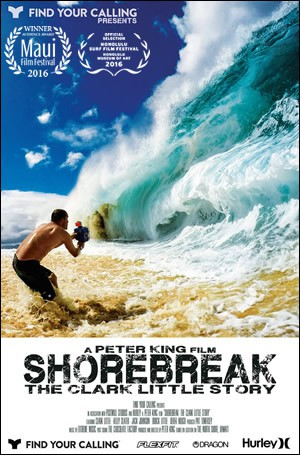

gesehen am 15.12.2017
gesehen am 15.12.2017Alternativ: Shorebreak: The Clark Little Story gesehen am 15.12.2017
 
 IMDB-Wertung: 6.3 / 10
IMDB-Wertung: 6.3 / 10  Metascore:
Metascore: 
Jahr: 2016
Dauer: 58 Minuten
FSK: 0
Land: USA Studio: TriCoast WorldwideTonspuren: DTS-HD - ,
Untertitel:
Auflösung: 1080p (1920x1080) Größe: 10649 MB
Genre: Dokumentation
Regisseur: Peter King
Drehbuch: John Rogers
Soundtrack:
Darsteller:
Datei: X:\Dokumentationen\Sport\Shorebreak - Die perfekte Welle (2016, FSK0, 1920x1080).mkv seit 15.12.2017
Festplatte: HD Serien(SU-Z)+Dokus+Musik
 Es gibt insgesamt 34 Filme in der Gruppe 'Dokumentationen\Sport'
Es gibt insgesamt 34 Filme in der Gruppe 'Dokumentationen\Sport'